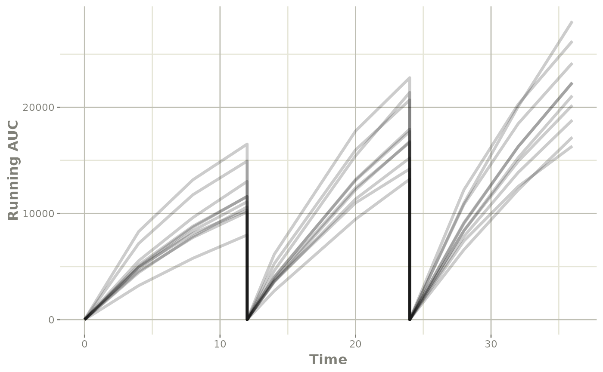

Simulate Derived Variables from imported NONMEM model
Source:vignettes/simulate-extra-items.Rmd
simulate-extra-items.RmdThis page shows a simple work-flow for directly simulating a
different dosing paradigm with new derived items, in this case
AUC.
Step 1: Import the model
library(nonmem2rx)
library(rxode2)
#> rxode2 2.0.13.9000 using 1 threads (see ?getRxThreads)
#> no cache: create with `rxCreateCache()`
# First we need the location of the nonmem control stream Since we are running an example, we will use one of the built-in examples in `nonmem2rx`
ctlFile <- system.file("mods/cpt/runODE032.ctl", package="nonmem2rx")
# You can use a control stream or other file. With the development
# version of `babelmixr2`, you can simply point to the listing file
mod <- nonmem2rx(ctlFile, lst=".res", save=FALSE, determineError=FALSE)
#> ℹ getting information from '/home/runner/work/_temp/Library/nonmem2rx/mods/cpt/runODE032.ctl'
#> ℹ reading in xml file
#> ℹ done
#> ℹ reading in phi file
#> ℹ done
#> ℹ reading in lst file
#> ℹ abbreviated list parsing
#> ℹ done
#> ℹ done
#> ℹ splitting control stream by records
#> ℹ done
#> ℹ Processing record $INPUT
#> ℹ Processing record $MODEL
#> ℹ Processing record $THETA
#> ℹ Processing record $OMEGA
#> ℹ Processing record $SIGMA
#> ℹ Processing record $PROBLEM
#> ℹ Processing record $DATA
#> ℹ Processing record $SUBROUTINES
#> ℹ Processing record $PK
#> ℹ Processing record $DES
#> ℹ Processing record $ERROR
#> ℹ Processing record $ESTIMATION
#> ℹ Ignore record $ESTIMATION
#> ℹ Processing record $COVARIANCE
#> ℹ Ignore record $COVARIANCE
#> ℹ Processing record $TABLE
#> ℹ change initial estimate of `theta1` to `1.37034036528946`
#> ℹ change initial estimate of `theta2` to `4.19814911033061`
#> ℹ change initial estimate of `theta3` to `1.38003493562413`
#> ℹ change initial estimate of `theta4` to `3.87657341967489`
#> ℹ change initial estimate of `theta5` to `0.196446108190896`
#> ℹ change initial estimate of `eta1` to `0.101251418415006`
#> ℹ change initial estimate of `eta2` to `0.0993872449483344`
#> ℹ change initial estimate of `eta3` to `0.101302674763154`
#> ℹ change initial estimate of `eta4` to `0.0730497519364148`
#> ℹ read in nonmem input data (for model validation): /home/runner/work/_temp/Library/nonmem2rx/mods/cpt/Bolus_2CPT.csv
#> ℹ ignoring lines that begin with a letter (IGNORE=@)'
#> ℹ applying names specified by $INPUT
#> ℹ subsetting accept/ignore filters code: .data[-which((.data$SD == 0)),]
#> ℹ done
#> using C compiler: ‘gcc (Ubuntu 11.3.0-1ubuntu1~22.04) 11.3.0’
#> ℹ read in nonmem IPRED data (for model validation): /home/runner/work/_temp/Library/nonmem2rx/mods/cpt/runODE032.csv
#> ℹ done
#> ℹ changing most variables to lower case
#> ℹ done
#> ℹ replace theta names
#> ℹ done
#> ℹ replace eta names
#> ℹ done (no labels)
#> ℹ renaming compartments
#> ℹ done
#> using C compiler: ‘gcc (Ubuntu 11.3.0-1ubuntu1~22.04) 11.3.0’
#> ℹ solving ipred problem
#> ℹ done
#> ℹ solving pred problem
#> ℹ doneStep 2: Add AUC calculation
The concentration in this case is the f from the model,
a trick to get the AUC is to have an additional ODE
d/dt(AUC) <- f and use some reset to get it per dosing
period.
However, this additional parameter is not part of the original model. The calculation of AUC would depend on the number of observations in your model, and for sparse data wouldn’t be terribly accurate.
One thing you can do is to use model piping append
d/dt(AUC) <- f to the imported model:
modAuc <- mod %>%
model(d/dt(AUC) <- f, append=TRUE)
#> → significant model change detected
#> → kept in model: '$atol', '$nonmemData', '$rtol', '$sigma', '$ssAtol', '$ssRtol'
#> → removed from model: '$dfObs', '$dfSub', '$digest', '$etaData', '$file', '$ipredAtol', '$ipredCompare', '$ipredData', '$ipredRtol', '$iwresAtol', '$iwresCompare', '$iwresRtol', '$notes', '$outputExtension', '$predAtol', '$predCompare', '$predData', '$predRtol', '$sigmaNames', '$thetaMat'
modAuc
#> ── rxode2-based free-form 3-cmt ODE model ──────────────────────────────────────
#> ── Initalization: ──
#> Fixed Effects ($theta):
#> theta1 theta2 theta3 theta4 RSV
#> 1.3703404 4.1981491 1.3800349 3.8765734 0.1964461
#>
#> Omega ($omega):
#> eta1 eta2 eta3 eta4
#> eta1 0.1012514 0.00000000 0.0000000 0.00000000
#> eta2 0.0000000 0.09938724 0.0000000 0.00000000
#> eta3 0.0000000 0.00000000 0.1013027 0.00000000
#> eta4 0.0000000 0.00000000 0.0000000 0.07304975
#>
#> States ($state or $stateDf):
#> Compartment Number Compartment Name
#> 1 1 CENTRAL
#> 2 2 PERI
#> 3 3 AUC
#> ── μ-referencing ($muRefTable): ──
#> theta eta level
#> 1 theta1 eta1 id
#> 2 theta2 eta2 id
#> 3 theta3 eta3 id
#> 4 theta4 eta4 id
#>
#> ── Model (Normalized Syntax): ──
#> function() {
#> description <- "BOLUS_2CPT_CLV1QV2 SINGLE DOSE FOCEI (120 Ind/2280 Obs) runODE032"
#> validation <- c("IPRED relative difference compared to Nonmem IPRED: 0%; 95% percentile: (0%,0%); rtol=6.43e-06",
#> "IPRED absolute difference compared to Nonmem IPRED: 95% percentile: (2.19e-05, 0.0418); atol=0.00167",
#> "IWRES relative difference compared to Nonmem IWRES: 0%; 95% percentile: (0%,0.01%); rtol=8.99e-06",
#> "IWRES absolute difference compared to Nonmem IWRES: 95% percentile: (1.82e-07, 4.63e-05); atol=3.65e-06",
#> "PRED relative difference compared to Nonmem PRED: 0%; 95% percentile: (0%,0%); rtol=6.41e-06",
#> "PRED absolute difference compared to Nonmem PRED: 95% percentile: (1.41e-07,0.00382) atol=6.41e-06")
#> ini({
#> theta1 <- 1.37034036528946
#> label("log Cl")
#> theta2 <- 4.19814911033061
#> label("log Vc")
#> theta3 <- 1.38003493562413
#> label("log Q")
#> theta4 <- 3.87657341967489
#> label("log Vp")
#> RSV <- c(0, 0.196446108190896, 1)
#> label("RSV")
#> eta1 ~ 0.101251418415006
#> eta2 ~ 0.0993872449483344
#> eta3 ~ 0.101302674763154
#> eta4 ~ 0.0730497519364148
#> })
#> model({
#> cmt(CENTRAL)
#> cmt(PERI)
#> cl <- exp(theta1 + eta1)
#> v <- exp(theta2 + eta2)
#> q <- exp(theta3 + eta3)
#> v2 <- exp(theta4 + eta4)
#> v1 <- v
#> scale1 <- v
#> k21 <- q/v2
#> k12 <- q/v
#> d/dt(CENTRAL) <- k21 * PERI - k12 * CENTRAL - cl * CENTRAL/v1
#> d/dt(PERI) <- -k21 * PERI + k12 * CENTRAL
#> f <- CENTRAL/scale1
#> ipred <- f
#> rescv <- RSV
#> w <- ipred * rescv
#> ires <- DV - ipred
#> iwres <- ires/w
#> y <- ipred + w * eps1
#> d/dt(AUC) <- f
#> })
#> }
#> ── nonmem2rx extra properties: ──
#>
#> Sigma ($sigma):
#> eps1
#> eps1 1
#>
#> other properties include: $nonmemData
#> captured NONMEM table outputs:
#> NONMEM/rxode2 comparison data: $iwresCompare, $predCompare, $ipredCompare
#> NONMEM/rxode2 composite comparison: $predAtol, $predRtol, $ipredAtol, $ipredRtol, $iwresAtol, $iwresRtolYou can also use append=NA to pre-pend or
append=f to put the ODE right after the f line
in the model.
Step 3: Setup event table to calculate the AUC for a different dosing paradigm:
Lets say that in this case instead of a single dose, we want to see what the concentration profile is with a single day of BID dosing. In this case is done by creating a quick event table.
In this case since we are also wanting AUC per dosing
period, you can add a reset dose to the AUC compartment
every time a dose is given (so it will only track the AUC of the current
dose):
Step 4: Solve using rxode2
In this step, we solve the model with the new event table for the 10 subjects:
s <- rxSolve(modAuc, ev)
#> ℹ using nocb interpolation like NONMEM, specify directly to change
#> ℹ using sigma from NONMEM
#> ℹ using NONMEM specified atol=1e-12
#> ℹ using NONMEM specified rtol=1e-06
#> ℹ using NONMEM specified ssRtol=1e-06
#> ℹ using NONMEM specified ssAtol=1e-12
#> using C compiler: ‘gcc (Ubuntu 11.3.0-1ubuntu1~22.04) 11.3.0’Note that since this derived from a nonmem2rx model, the
default solving will match the tolerances and methods specified in your
NONMEM model.
Step 5: Exploring the simulation (by plotting), and summarizing (dplyr)
This solved object acts the same as any other rxode2
solved object, so you can use the plot() function to see
the individual running AUC profiles you simulated:

You can also select the points near the dosing to get the AUC for the interval:
library(dplyr)
#>
#> Attaching package: 'dplyr'
#> The following objects are masked from 'package:stats':
#>
#> filter, lag
#> The following objects are masked from 'package:base':
#>
#> intersect, setdiff, setequal, union
s %>% filter(time %in% c(11.999, 23.999)) %>%
mutate(time=round(time)) %>%
select(id, time, AUC)
#> id time AUC
#> 1 1 12 7882.622
#> 2 1 24 12685.662
#> 3 2 12 11683.590
#> 4 2 24 18124.221
#> 5 3 12 13354.785
#> 6 3 24 20465.782
#> 7 4 12 14132.697
#> 8 4 24 20318.143
#> 9 5 12 18884.599
#> 10 5 24 29478.540
#> 11 6 12 9334.408
#> 12 6 24 13054.396
#> 13 7 12 11833.837
#> 14 7 24 17096.284
#> 15 8 12 11024.390
#> 16 8 24 14060.760
#> 17 9 12 12336.898
#> 18 9 24 17483.272
#> 19 10 12 10974.756
#> 20 10 24 16279.831